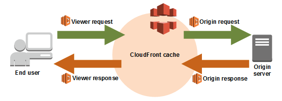

AWS S3, Lambda, API Gateway를 활용한 실시간 이미지 리사이징 솔루션
목차
글을 쓴 배경
다양한 크기의 기기들에게 그에 맞는 이미지를 제공해야 하는 필요성이 생겼습니다. 이 글에서는 특정 크기의 이미지를 요청하면 그에 맞는 이미지를 리사이징 하여 노출하는 방식을 소개합니다.
또한 클라우드 프론트를 이용하여 생성된 이미지를 저장하지 않고 캐싱하여 데이터 효율성을 높이는 방법을 고안하였습니다.
이 블로그는 현재 이미 이미지 변환 솔루션을 사용하고 있어서 query 규칙 등을 변경할 수 없는 유저들도 CloudFront와 Lambda@Edge를 이용한 이미지 변환 방식을 사용할 수 있도록 돕기 위해 작성되었습니다.
관련 문서 : Resizing Images with Amazon CloudFront & Lambda@Edge
글 요약

- 사용자가 CloudFront URL을 통해 특정 크기의 이미지를 요청합니다.
- CloudFront는 Lambda@Edge Viewer-Request 함수를 트리거하여 요청된 이미지의 URI를 조작하고, 캐싱된 이미지가 있는지 확인합니다.
- CloudFront에 이미지 캐시에 없는 경우, Origin Response 함수가 원본 이미지를 다운로드하고, 리사이징을 수행한 후 변환된 이미지를 응답으로 반환합니다.
- CloudFront는 변환된 이미지를 사용자에게 전달하고, 이를 캐시에 저장하여 이후 동일한 요청에 빠르게 응답할 수 있도록 합니다.
시작하기 전
- Lambda@Edge와 CloudFront 이벤트 트리거 설정 이해
- Node.js 20 환경에서 Lambda 함수 개발
1. CloudFront와 Lambda@Edge로 이미지 리사이징하기
Lambda@Edge는 AWS Lambda의 기능을 엣지로 확장하여 여러 AWS 위치에서 코드를 실행할 수 있게 해줍니다.
이를 통해 이미지 리사이징과 같은 작업을 클라우드 엣지에서 직접 수행하여 전송 시간과 네트워크 비용을 절감할 수 있습니다.
CloudFront와 결합하여 다음과 같은 주요 이벤트가 발생할 때 Lambda@Edge 함수를 실행하도록 트리거를 추가할 수 있습니다.
-
CloudFront Viewer Request: CloudFront가 뷰어로부터 요청을 받을 때 실행됩니다.
-
CloudFront Origin Request: CloudFront가 원본 서버로 요청을 전달할 때 실행됩니다. 이 이벤트는 캐시된 이미지가 없는 경우에만 발생합니다.
-
CloudFront Origin Response: CloudFront가 원본 서버로부터 응답을 받은 후 실행됩니다. 원본 서버에서 이미지를 가져온 후, 이 이벤트에서 Lambda@Edge 함수는 이미지를 리사이징하는 등 변환 작업을 수행할 수 있습니다. 캐시된 이미지가 없는 경우에만 발생하므로, 이미지 리사이징 작업이 불필요하게 중복되지 않도록 합니다.
-
CloudFront Viewer Response: CloudFront가 요청된 객체를 뷰어에게 반환하기 전에 실행됩니다. 이후 동일한 요청에 대해 캐시된 이미지가 빠르게 제공됩니다.
2. Lambda@Edge 생성하기
2.1 Viewer Request Function
기존 변환 솔루션을 사용하고 있는 query 규칙을 변경할 수 없는 유저를 위해 요청된 이미지의 URI를 response 함수가 사용할 수 있게 변환하는 작업을 수행합니다.
기존 솔루션 규칙 설명
크롭 - 최적화 /dims/crop/3464x1520+188+840/optimize /dims/crop/3688x2075+76+485/optimize 크롭 - 리사이즈 - 최적화 /dims/crop/3464x1520+188+840/resize/1180x518/optimize /dims/crop/2871x2473+485+87/resize/900x775/optimize 리사이즈 - 최적화 /dims/resize/96x96/optimize
'use strict';
import querystring from 'querystring';
function makeResponse(status, statusDescription, bodyContent, contentType) {
return {
status,
statusDescription,
headers: {
'content-type': [{
key: 'Content-Type',
value: contentType || 'application/json'
}]
},
body: bodyContent,
bodyEncoding: contentType ? 'base64' : undefined,
};
}
export const handler = async (event) => {
console.log('Received event:', JSON.stringify(event, null, 2));
try {
const { request } = event.Records[0].cf;
const uri = request.uri;
let newUri;
let transformationOptions = {};
const cropMatch = uri.match(/\/dims\/crop\/(\d+)x(\d+)\+(\d+)\+(\d+)(\/resize\/(\d+)x(\d+))?(\/optimize|min|max)?/);
const resizeMatch = uri.match(/\/dims\/resize\/(\d+)x(\d+)(\/optimize|min|max)?/);
if (cropMatch) {
// Crop (and possibly resize and optimize)
const [fullMatch, cropWidth, cropHeight, cropX, cropY, , resizeWidth, resizeHeight, option] = cropMatch;
transformationOptions = {
type: resizeWidth && resizeHeight ? 'crop+resize' : 'crop',
cropWidth: parseInt(cropWidth, 10),
cropHeight: parseInt(cropHeight, 10),
cropX: parseInt(cropX, 10),
cropY: parseInt(cropY, 10),
...(resizeWidth && { resizeWidth: parseInt(resizeWidth, 10) }),
...(resizeHeight && { resizeHeight: parseInt(resizeHeight, 10) }),
option: option ? option.slice(1) : undefined
};
newUri = `/${cropWidth}x${cropHeight}+${cropX}+${cropY}`;
if (resizeWidth && resizeHeight) {
newUri += `/${resizeWidth}x${resizeHeight}`;
}
} else if (resizeMatch) {
// Resize (and possibly optimize)
const [fullMatch, resizeWidth, resizeHeight, option] = resizeMatch;
transformationOptions = {
type: 'resize',
resizeWidth: parseInt(resizeWidth, 10),
resizeHeight: parseInt(resizeHeight, 10),
option: option ? option.slice(1) : undefined
};
newUri = `/${resizeWidth}x${resizeHeight}`;
} else {
console.log('Invalid URI format');
return makeResponse('400', 'Bad Request', 'Invalid URI format');
}
// Construct the final URI with the transformation options
const imageNameMatch = uri.match(/\/([^\/]+)\.(jpg|jpeg|png)/);
if (!imageNameMatch) {
console.log('Invalid URI format for image name');
return makeResponse('400', 'Bad Request', 'Invalid URI format for image name');
}
const [fullImageNameMatch, imageName, extension] = imageNameMatch;
newUri = `/${imageName}.${extension}${newUri}`;
// Add the transformation options to the query string
request.querystring = querystring.stringify(transformationOptions);
// Add custom headers for transform and option
request.headers['x-custom-transform'] = [{
key: 'X-Custom-Transform',
value: transformationOptions.type
}];
if (transformationOptions.option) {
request.headers['x-custom-option'] = [{
key: 'X-Custom-Option',
value: transformationOptions.option
}];
}
// Log the final URI for debugging
console.log('Modified URI:', newUri);
console.log('Transformation options:', transformationOptions);
console.log('Request headers:', JSON.stringify(request.headers, null, 2));
// Update the request URI
request.uri = newUri;
// Forward the request with the modified URI
return request;
} catch (err) {
console.log('Error processing request:', err);
return makeResponse('500', 'Internal Server Error', 'An error occurred while processing the request');
}
};
2.1 Viewer Request Function 상세 내용
- makeResponse 함수
CloudFront가 Lambda@Edge 함수로부터 받는 응답 형식이 특정한 구조를 따라야 하기 때문입니다.
function makeResponse(status, statusDescription, bodyContent, contentType) {
return {
status,
statusDescription,
headers: {
'content-type': [{
key: 'Content-Type',
value: contentType || 'application/json'
}]
},
body: bodyContent,
bodyEncoding: contentType ? 'base64' : undefined,
};
}
- URI 매칭 및 변환 옵션 설정
기존 규칙 설명과 연결지은 코드 설명 추가 필요
const cropMatch = uri.match(/\/dims\/crop\/(\d+)x(\d+)\+(\d+)\+(\d+)(\/resize\/(\d+)x(\d+))?(\/optimize|min|max)?/);
const resizeMatch = uri.match(/\/dims\/resize\/(\d+)x(\d+)(\/optimize|min|max)?/);
if (cropMatch) {
// Crop (and possibly resize and optimize)
const [fullMatch, cropWidth, cropHeight, cropX, cropY, , resizeWidth, resizeHeight, option] = cropMatch;
transformationOptions = {
type: resizeWidth && resizeHeight ? 'crop+resize' : 'crop',
cropWidth: parseInt(cropWidth, 10),
cropHeight: parseInt(cropHeight, 10),
cropX: parseInt(cropX, 10),
cropY: parseInt(cropY, 10),
...(resizeWidth && { resizeWidth: parseInt(resizeWidth, 10) }),
...(resizeHeight && { resizeHeight: parseInt(resizeHeight, 10) }),
option: option ? option.slice(1) : undefined
};
newUri = `/${cropWidth}x${cropHeight}+${cropX}+${cropY}`;
if (resizeWidth && resizeHeight) {
newUri += `/${resizeWidth}x${resizeHeight}`;
}
} else if (resizeMatch) {
// Resize (and possibly optimize)
const [fullMatch, resizeWidth, resizeHeight, option] = resizeMatch;
transformationOptions = {
type: 'resize',
resizeWidth: parseInt(resizeWidth, 10),
resizeHeight: parseInt(resizeHeight, 10),
option: option ? option.slice(1) : undefined
};
newUri = `/${resizeWidth}x${resizeHeight}`;
} else {
console.log('Invalid URI format');
return makeResponse('400', 'Bad Request', 'Invalid URI format');
}
- URI에서 이미지 이름과 확장자를 추출하여 최종 변환되어 반환할 URI구성합니다.
const imageNameMatch = uri.match(/\/([^\/]+)\.(jpg|jpeg|png)/);
if (!imageNameMatch) {
console.log('Invalid URI format for image name');
return makeResponse('400', 'Bad Request', 'Invalid URI format for image name');
}
const [fullImageNameMatch, imageName, extension] = imageNameMatch;
newUri = `/${imageName}.${extension}${newUri}`;
옵션 값을 커스텀 헤더에 담아 전달합니다